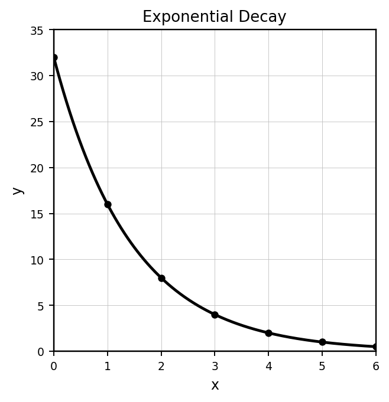
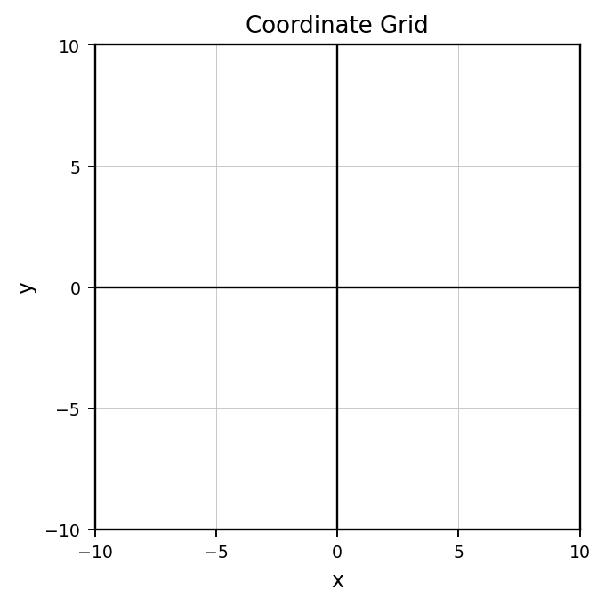
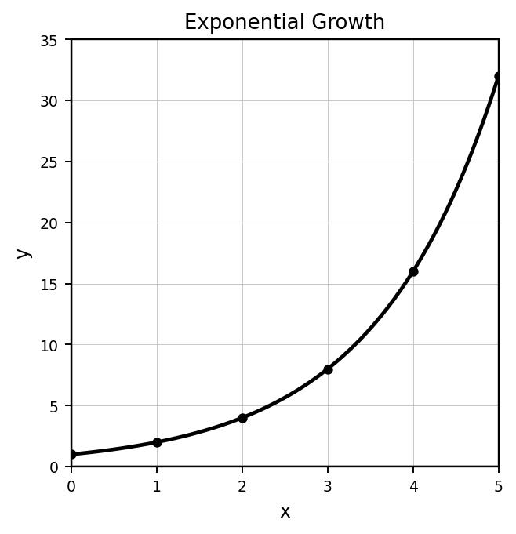
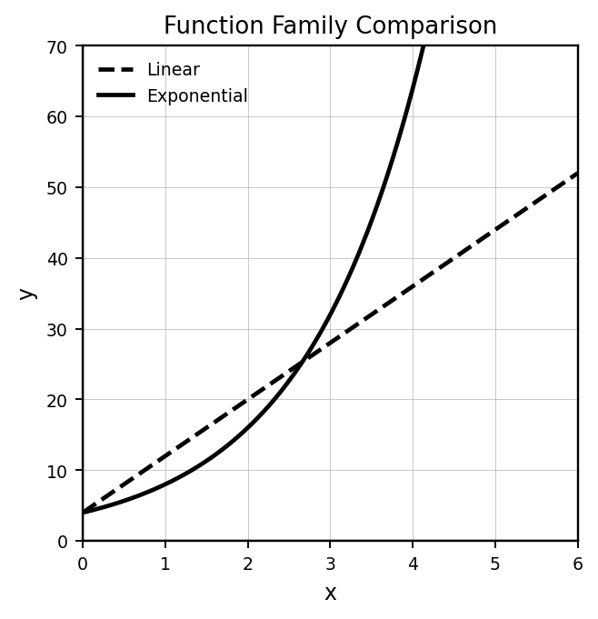

Students will analyze, represent, and model exponential relationships in order to interpret growth and decay, compare function behavior, and make predictions using equations, graphs, tables, and contexts.
| Rung | I Can Statement | DOK | Level |
|---|---|---|---|
| 8 | I can create and analyze exponential models from data or contexts, use them to make predictions, and justify whether the model and prediction are reasonable. | DOK 4 | Above |
| 7 | I can compare exponential models with linear and quadratic models, critique model choices, and defend which function family best represents a situation. | DOK 4 | Above |
| 6 | I can analyze exponential growth and decay across graphs, tables, equations, and contexts and explain how repeated multiplication controls the behavior. | DOK 3 | Essential |
| 5 | I can justify an exponential equation or graph by connecting initial value, multiplier, percent change, and contextual meaning. | DOK 3 | Essential |
| 4 | I can write exponential equations from tables, graphs, and situations and use them to make routine predictions. | DOK 2 | Essential |
| 3 | I can graph exponential relationships, calculate values, and compare basic growth and decay behavior. | DOK 2 | Essential |
| 2 | I can identify growth, decay, initial value, multiplier, and repeated multiplication from tables, graphs, equations, and contexts. | DOK 1 | Essential |
| 1 | I can use vocabulary and notation for exponential relationships, growth factors, decay factors, inputs, outputs, and function families correctly. | DOK 1 | Essential |
Format: 3–5 minute warm-up, vocabulary check, table-pattern check, graph recognition, or exit ticket
Purpose: Check whether students can recognize exponential patterns, identify growth and decay, use vocabulary, and name initial values, multipliers, growth factors, and decay factors.
Determine whether the pattern appears linear, exponential, or neither.
| $x$ | 0 | 1 | 2 | 3 |
|---|---|---|---|---|
| $y$ | 3 | 6 | 12 | 24 |
Identify the initial value and multiplier for $y=5(2)^x$.
Does $y=80(0.75)^x$ represent growth or decay? Explain briefly.
For the table, identify the repeated multiplier.
| Step | 0 | 1 | 2 | 3 |
|---|---|---|---|---|
| Value | 64 | 32 | 16 | 8 |
Which equation shows exponential growth?
Use the graph. Is the relationship growth or decay?

Complete the sentence: Exponential relationships change by repeated __________.
Which function family usually has a constant first difference in a table: linear, quadratic, or exponential?
Format: Exit ticket, partner check, mini-quiz, graph/table task, or short written task
Purpose: Check whether students can write exponential equations, graph exponential relationships, calculate values, and make routine predictions.
Complete the table for $y=3(2)^x$.
| $x$ | 0 | 1 | 2 | 3 |
|---|---|---|---|---|
| $y$ |
Write an exponential equation for a relationship with initial value $12$ and multiplier $3$.
A population starts at $200$ and increases by $15\%$ each year. Write an exponential model.
A computer is worth $900$ and loses $20\%$ of its value each year. Write an exponential model.
Use $y=40(1.5)^x$ to predict the value when $x=4$.
Graph $y=2^x$ for $x=0,1,2,3,4,5$. Use the grid if helpful.

Use the graph to estimate the value of $y$ when $x=4$.

Compare the two models at $x=5$: $A=10(2)^x$ and $B=60+20x$.
Format: Constructed response, model critique, strategy comparison, representation analysis, or discourse prompt
Purpose: Check whether students can justify exponential models, explain growth and decay behavior, compare function families, and critique unreasonable predictions.
A student says:
This table is exponential because the outputs increase.
| $x$ | 0 | 1 | 2 | 3 |
|---|---|---|---|---|
| $y$ | 4 | 7 | 10 | 13 |
Critique the statement and explain the correct reasoning.
Explain why $y=100(1.08)^x$ represents an $8\%$ increase, not a $108\%$ increase.
Compare $y=50(2)^x$ and $y=50(0.5)^x$. How are their initial values and long-term behaviors different?
Use the graph to explain why exponential growth can eventually pass linear growth even if the linear model is larger at first.

A student models a $25\%$ decrease using $y=300(0.25)^x$. Identify the misconception and write a better model.
Use the table to justify whether an exponential model is reasonable.
| $x$ | 0 | 1 | 2 | 3 | 4 |
|---|---|---|---|---|---|
| $y$ | 6 | 12 | 24 | 48 | 96 |
Explain why making a prediction far beyond the data range can be risky, even when the exponential equation fits the data well.
Choose the better model type: linear or exponential. A bacteria culture doubles every hour. Justify your choice using mathematical language.
Format: Brief performance task, modeling task, critique-and-revise task, design task, or extended application
Purpose: Check whether students can transfer exponential reasoning to unfamiliar situations, create models, compare model families, and justify decisions.
Create an exponential growth situation with an initial value of $250$ and a growth rate between $5\%$ and $20\%$. Write the model and interpret each part.
Design a depreciation model for an item of your choice. Include an equation, a four-year table, and a statement about reasonableness.
Use the data to propose an exponential model. Explain your assumption and one limitation.
| Day | 0 | 1 | 2 | 3 | 4 |
|---|---|---|---|---|---|
| Amount | 50 | 75 | 113 | 169 | 253 |
Critique and revise this model: A $30\%$ increase from $400$ is modeled by $y=400(30)^t$.
Create two exponential models that start at the same value but lead to very different predictions after $10$ steps. Explain why.
Use the comparison graph to make a recommendation about which model is better for short-term versus long-term prediction.
Design a short investigation using bounce-height decay, cooling, or population growth. Include what data students would collect and how they would model it.
Design a multi-representation exponential modeling task involving a table, graph, equation, and context. Include the evidence students should use to justify their model.